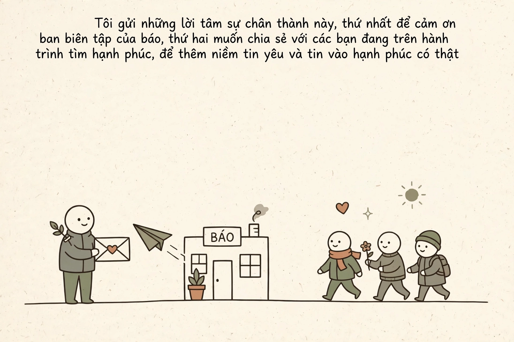
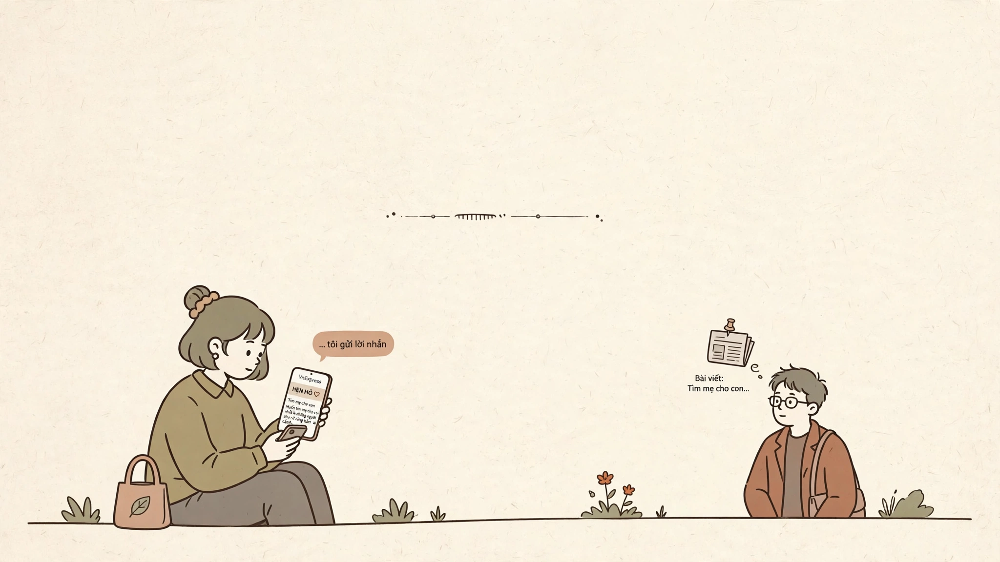
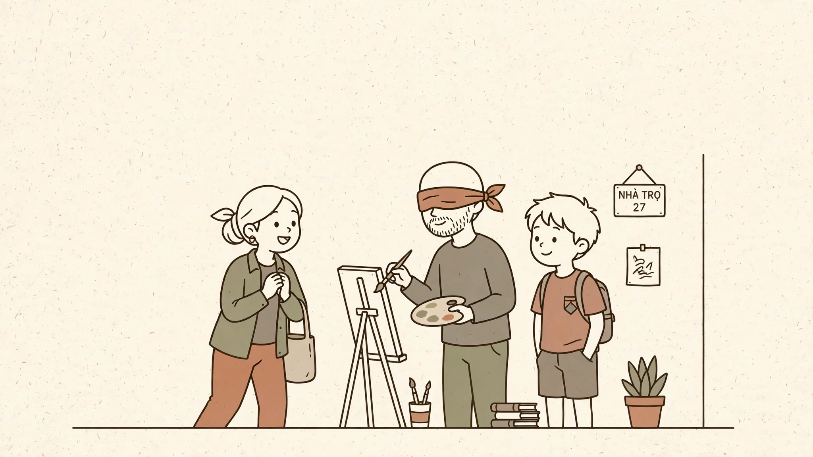
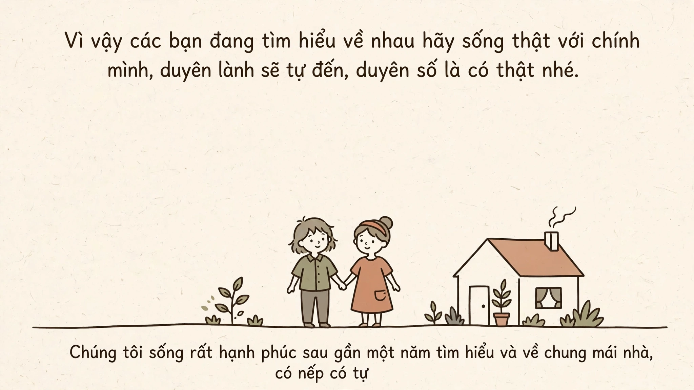

Anh trao chìa khóa căn nhà cho tôi sau khi 'vờ' thuê nhà và làm xe ôm

Anh bảo tôi chân thành và thật thà, những người trước làm quen với anh đều "chạy mất dép" sau khi nghe anh nói về hoàn cảnh.

Tôi gửi những lời tâm sự chân thành này, thứ nhất để cảm ơn ban biên tập của báo, thứ hai muốn chia sẻ với các bạn đang trên hành trình tìm hạnh phúc, để thêm niềm tin yêu và tin vào hạnh phúc có thật. Tôi là người phụ nữ đã trải qua một lần đò, không có hạnh phúc vì chồng ham chơi lười làm, nhậu nhẹt và đối xử không tốt với mẹ con tôi. Sau những lần tổn thương, tôi quyết định giải thoát khỏi cuộc hôn nhân không hạnh phúc này, ra đi với hai bàn tay trắng và cô con gái 10 tuổi để lên Hà Nội lập nghiệp. Thời gian đầu tôi gặp rất nhiều khó khăn từ việc thuê trọ, tìm việc làm, tìm trường và xin học cho con gái. Cũng may mắn, hai bác chủ nhà tốt bụng và thương hoàn cảnh của mẹ con tôi nên giúp đỡ rất nhiều. Tôi 38 tuổi, không có trình độ bằng cấp gì nên hai bác đã giới thiệu tôi đi làm giúp việc gia đình theo giờ cho những nhà có nhu cầu.

Công việc không quá vất vả, rất phù hợp với thời gian của tôi. Tôi có thể chăm sóc cho con gái đi học hàng ngày, sáng làm hai nhà, chiều làm hai nhà, thứ bảy và chủ nhật con gái được nghỉ học nên tôi nhận làm thêm hai nhà nữa, mong có thêm thu nhập để lo cho con gái học hành. Mọi gia đình mà tôi làm giúp việc khi biết hoàn cảnh của hai mẹ con đều giúp đỡ rất nhiều, người thì cho những bộ quần áo, giày dép còn rất mới, người thì cho hoa quả và thức ăn. Dần dần cuộc sống của hai mẹ con đã tốt hơn và ổn định hơn. Thậm chí có người còn vun vén tình cảm và giới thiệu vài người đàn ông có hoàn cảnh như tôi để mong hai mẹ con có hạnh phúc mới và người thương yêu thật lòng. Thú thật tôi đã suy nghĩ rất nhiều về chuyện đó, chỉ sợ lại gặp một người đàn ông như chồng cũ thì hai mẹ con sẽ khổ, rồi mang tiếng với bố mẹ và họ hàng.

Thời gian cứ thế qua đi, tôi gặp anh nhờ mục Hẹn hò của báo VnExpress. Anh đã đăng bài viết muốn tìm mẹ cho con, nhất là những người phụ nữ cùng hoàn cảnh. Ban đầu tôi đọc lướt qua, có gửi những lời bình luận chúc anh sớm tìm được hạnh phúc của mình. Rồi không biết sao tôi lại đọc đi đọc lại bài viết của anh rất nhiều lần, suy nghĩ rất lâu để rồi quyết định mạnh dạn gửi thư làm quen. Tôi cảm nhận được sự chân thành và rất đàn ông, điềm đạm của anh, sự nhẹ nhàng trong từng câu chữ. Sau khi gửi thư làm quen với anh, một phần tôi bận rộn với công việc của mình, một phần nghĩ là anh sẽ không bao giờ hồi âm lại cho mình đâu, nên tôi không để ý mail cá nhân nữa.

Bất ngờ lại đến, ngày hôm sau tôi nhận được thư hồi âm. Trong thư anh nói làm nghề tài xế, thuê nhà ở Hà Nội, anh sợ không phù hợp với tôi và con. Anh nói không có nhà lầu xe hơi và điện thoại mới cao cấp, không hái được sao trên trời cho tôi, thế nhưng sẽ mang lại cho mẹ con tôi hạnh phúc, nếu như không chê anh nghèo. Anh nói là vậy nhưng tôi vẫn cảm nhận được sự chân thành trong từng câu chữ. Linh tính mách bảo tôi rằng anh là người đàn ông tốt, sống thật lòng và có trách nhiệm. Tôi trả lời anh rằng em cũng nghèo khó, không sợ khó khăn gian khổ, chỉ cần hai người yêu thương nhau thật lòng.

Anh có hoàn cảnh giống như tôi, chỉ khác là vợ anh mất 6 năm nay rồi vì bệnh hiểm nghèo, có một bé trai 14 tuổi. Ngày anh mời về thăm nhà trọ như anh từng nói, tôi bất ngờ và hạnh phúc. Anh bịt mắt tôi lại, trao cho tôi chùm chìa khóa, sau đó anh mở che mắt tôi ra, nói tôi xứng đáng là mẹ của con, là vợ anh và chủ của ngôi nhà này. Tôi sung sướng và hạnh phúc khi biết căn nhà của anh có ba tầng khang trang sạch sẽ, có hoa trồng trước cửa nhà. Anh bảo tôi là người phụ nữ mà anh đã lựa chọn vì tôi chân thành và thật thà, những người phụ nữ trước đây gửi thư làm quen với anh đều "chạy mất dép" sau khi nghe anh nói về hoàn cảnh là chỉ thuê nhà và làm nghề xe ôm. Tôi nghĩ tình yêu cần sự chân thành, cơ hội đến với nhau là do duyên số và cũng một phần do mình tự tạo ra.

Vì vậy các bạn đang tìm hiểu về nhau hãy sống thật với chính mình, duyên lành sẽ tự đến, duyên số là có thật nhé. Chúng tôi sống rất hạnh phúc sau gần một năm tìm hiểu và về chung mái nhà, có nếp có tẻ và sẽ không sinh con chung vì tuổi của chúng tôi cũng cao rồi, anh hơn tôi 4 tuổi. Qua những lời tâm sự chân thành của tôi chia sẻ, một lần nữa xin cảm ơn quý báo VnExpress đã se duyên lành. Chúc cho các bạn trẻ sớm tìm được hạnh phúc của mình. Xin chân thành cảm ơn.

Cảm ơn bạn đã lắng nghe.
1 / 8
Nguồn: Bài gốc